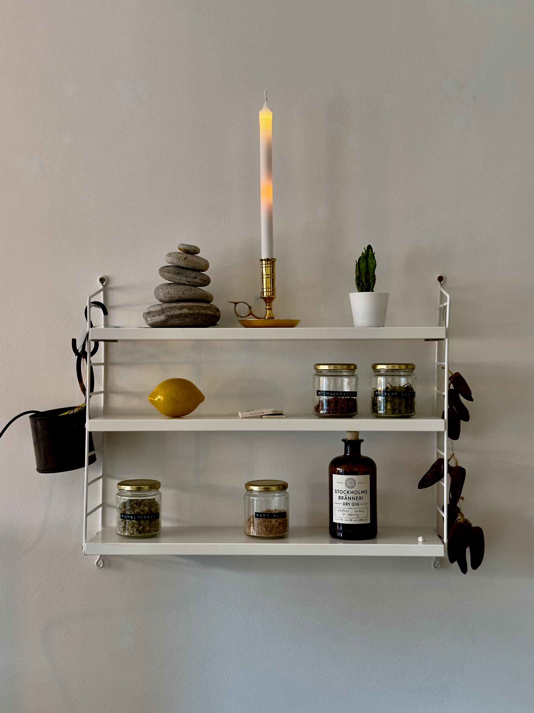
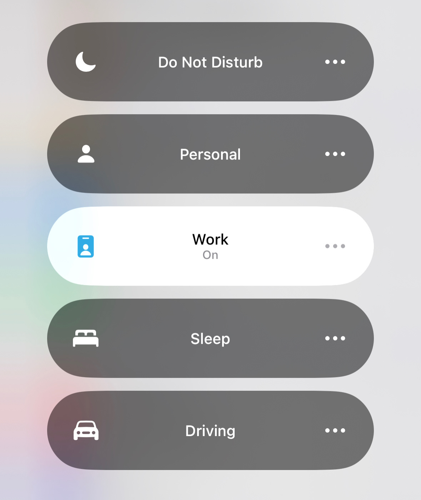
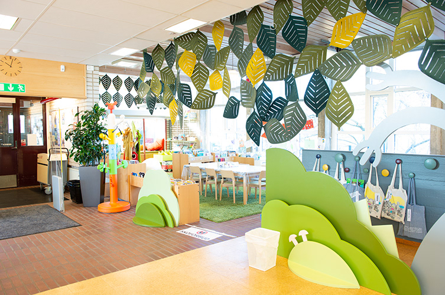

Hi there, my name is Simon Jeppsson. I'm a UX Designer (even though I look like an author in the picture) who is currently based in Malmö, studying Interaction Design for my Bachelor's degree at Malmö University. My background is in service. I have always had a passion for helping people and seeing beyond what people initially think they need. As we said in the travel industry, DLX (det lilla extra), which means that service is not only what people expect but something above that. I take this philosophy with me in my work as a designer and want to look beyond the 'ordinary' to provide users with experiences that will not only make the service seem easy but also enjoyable.
This was a project within a course focusing on using prototypes to evolve a design process. The project came in the the finals to the future makers competition at Malmö University, witch is something im very proud of. People have a hard time feeling the rate of their electricity consumption due to it being immaterial, abstract, and often thought of as unlimited. Current solutions typically convey electrical usage in terms of technical units or in terms of cost. Despite being interested in their energy usage, we found that people have a hard time understanding technical units or feel a sense of guilt when looking at how much their usage is costing them. We decided to design for households where two or more adults are sharing the financial responsibility – and consumption – for electricity.
Notifications have become an integral part of our daily lives, connecting us and facilitating communication with our loved ones. However, the current state of notification delivery is plagued by a significant flaw. The incessant flow of notifications also disrupts our focus and obstructs our ability to engage in tasks and conversations. During the project i have found that people want to limit their notifications but finds it very hard to figure out how to limit them and the interruptions that they cause Disabling notifications often induces a sense of missing out, leading users to constantly check their phones in search of connection and information.
This is an ongoing project that i currently have at Malmö Uni. The libraries role in todays society is challenged, we see less people reading physical books and the library see an decline of visitors. This creates an opportunity where the library need to adapt their focus and The aim of the project is to, with participatory design try to find opportunities of how to draw people to the library and what services the library should offer. Some of the insights that we have throughout a probe, where we tried different ways that the library can communicate to the people in the community. The probe people are very invested in the library's activities, but does not show
| Skillset | Level |
|---|---|
| HTML | High |
| CSS | High |
| JavaScript | Medium |
| Figma | High |
| Photoshop | Medium |
| Lightroom | Medium |
| Blender | Medium |